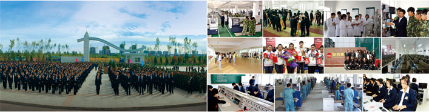

学校简介
哈尔滨劳动技师学院是黑龙江省政府批准的全日制公办职业技术学院，是省高技能人才培训基地、国家级重点技工院校、省级示范性技工院校、省职业教师培训基地。现有全日制在校生7000余人，其中高级工、预备技师占在校生总数的70%，年开展各类中短期培训40000余人。新校区暨哈市大中专毕业生就业服务基地建成后，计划在校生规模达到10000人，年开展各类培训约80000人。
学院位于利民开发区学院路，占地面积20.38万平方米，规划总建筑面积13.49万平方米，项目建设总投资3.3亿元，计划新学年开学前投入使用。学院教学设施先进完备，拥有上百套实训设备、30余个现代化技能实验实训中心及信息资源管理中心。师资力量雄厚，一体化教师占60%以上，学生和教师曾多次在全国、省市技能大赛上获得大奖，教学质量居全省前列，就业质量稳步提高，就业率达98%以上，学生就业去向以本市和沿海发达地区大中型企业为主。学院坚持职业学历教育与职业技能培训并重，内涵建设与外延发展并举，形成了以市场需求为导向、以技能开发为核心、以实践培养为重点的办学特色。按照市委提出的 "北跃、南拓、中兴、强县"发展战略，学院确定了"发挥优势、突出特色、就业引导、服务战略、复合为本"的发展思路，倡导"学习丰富人生、知识规划人生、技能创造人生、劳动幸福人生"的育人理念，注重培养德能兼备的知识技能型和复合技能型人才。学院现已开设电气工程、机械工程、建筑工程与装饰设计、新兴技术与现代服务等四大类31个专业，其中，电气维修、机械加工、建筑工程测量等专业是省级名牌专业。
学院经过未来五年的发展，将成为哈市知识技能型人才培训基地、服务外包技能人才培训和储备基地、农村劳动力转移培训基地、从业人员技能提升培训基地、大中专毕业生就业与创业实训基地、国防建设教育基地，进而成为哈市实施新发展战略高技能人才重点培养基地。
